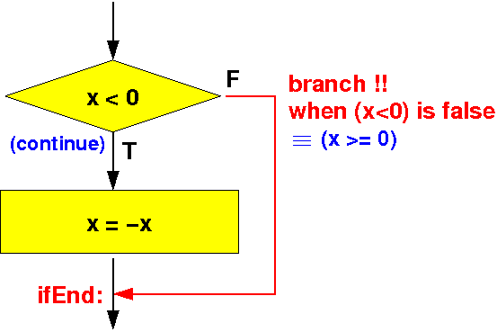

- High level programming languages
provides the if-statement construct
that has the following form:
if ( condition ) statementComment:
- The body of the
if-statement
contains
only
one (1) statement
- If you need multiple statements
in the body, you can use
curly braces { ... } to enclose
the statements
The compiler will treat (= consider) this construct:
{ statement1; statement2; ... }as one statement !!!
- The body of the
if-statement
contains
only
one (1) statement
- Program control control
of the if-statement
given in a
flow chart is as follows:
Flow chart of the if-statement if ( condition ) ----> | statement | +--------------+ FALSE | condition |--------+ +--------------+ | | | | TRUE | | | V | statement(s) | | | | | V | +<---------------+ | VI.e.:
- If the condition is
true:
- The statement is execute and
- The program continues with the next statement
- If the condition is
false:
- The program continues with the next statement
- If the condition is
true:
- The assembler code construct
that realizes
the program control flow
of the
if-statement is
as follows:
Assembler code to evaluate "condition" (use cmp instruction) | V FALSE Branch on the FALSE outcome of "condition" to label A: ----+ | | | don't branch on the TRUE outcome of condition | | | V | Assembler code to execute "statement" | | | | | V | A: +<------------------------------------------------+ | VI will illustrate the assembler coding technique with 2 examples in this webpage
In class - due to time limitations - I will explain the example 1.
Come to class if you want to see how I develop the code for this example
- Example 1:
find the absolute value
of the value in the
variable x
The high level programming language statement is:
int x; if ( x < 0 ) x = -x;The flow chart of the program is:
 The ARM assembler code for the high level program is:
main: movw r0, #:lower16:x movt r0, #:upper16:x // r0 = addr(x) ldr r1, [r0] // r1 = x cmp r1, #0 // Compare x ? 0 bge IfEnd // Branch to "isPos" if x >= 0 neg r1, r1 // r1 = 0 - r1 (negate) movw r0, #:lower16:x movt r0, #:upper16:x // r0 = addr(x) str r1, [r0] // Update x with -x // NOTE: if you OMIT this instruction, // the variable x will NOT be // updated !!! IfEnd: /* -------------------------------------------------- Begin of the permanent program variables -------------------------------------------------- */ .data x: .4byte -4 // x = -4 -- try changing the sign and run the prog .end
- Example Program:
(Demo above code)

- Prog file: /home/cs255001/demo/asm/6-if/if1.s
How to run the program:
- To compile: as255 if1
- To run: use EGTAPI
- Given 2 values in
x and
y
Make sure that y has the largest value
I.e.: swap the values in x and y if x > y
- The high level program
is as follows:
int x; int y; int help; if ( x > y ) { help = x; x = y; y = help; }The flow chart of the program is:

Note:
- In a high level language,
we must use a help variable
to perform the swap operation
- Because registers can store variable values, we don't need an extra help variable to to perform the swap operation in assembler code !!!
ARM assembler code for the above if-statement:
main: movw r0, #:lower16:x movt r0, #:upper16:x // r0 = addr(x) ldr r1, [r0] // r1 = x (I save r0 because I need it later !) movw r2, #:lower16:y movt r2, #:upper16:y // r2 = addr(y) ldr r3, [r2] // r3 = y (I save r2 because I need it later !) cmp r1, r3 // Compare x ? y ble ifEnd // Branch if x <= y to ifEnd // x > y: swap x and str r1, [r2] // Store the x-copy in y (in memory): y = x in r1 str r3, [r0] // Store the y-copy in x (in memory): x = y in r3 ifEnd: /* -------------------------------------------------- Begin of the permanent program variables -------------------------------------------------- */ .data x: .4byte 9 // x = 9 -- try a value smaller that 4 y: .4byte 4 // y = 4 .end
- In a high level language,
we must use a help variable
to perform the swap operation
- Example Program:
(Demo above code)
- Prog file: /home/cs255001/demo/asm/6-if/if2.s
How to run the program:
- To compile: as255 if2
- To run: us EGTAPI